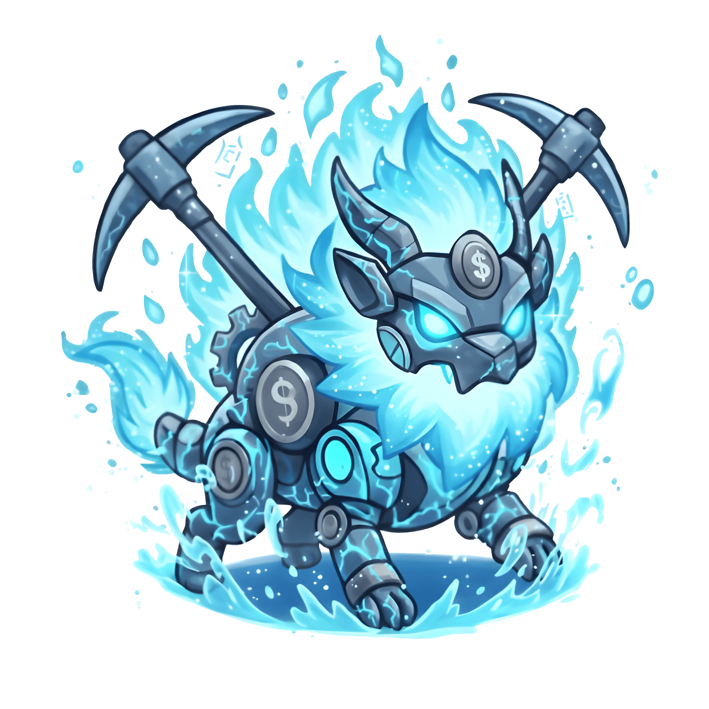

ScorchCore
Protocol


"Millones de héroes yacen en las billeteras como reliquias; su esencia vital atrapada en el letargo mágico de la Eco-Estasis".
"Millones de héroes yacen en las billeteras como reliquias; su esencia vital atrapada en el letargo mágico de la Eco-Estasis".
Tras el Gran Cataclismo, las tierras de Lunacia se sumieron en un invierno espiritual. Incontables guerreros Axie quedaron atrapados en un sueño eterno, olvidados en las profundidades de las billeteras como reliquias de una era pasada. La magia que una vez fluyó por sus venas se cristalizó, esperando un calor que parecía que nunca llegaría hasta que las primeras grietas del ScorchCore comenzaron a latir bajo la tierra.

Para canalizar el poder indomable del núcleo, los maestros artesanos diseñaron la "Elemental Forge". Mediante este ritual, la esencia vital del Axie es transmutada e infundida en Geodas Alquímicas, recipientes de energía pura que laten al ritmo del volcán. Ya no son solo guerreros del pasado, sino la semilla de una nueva estirpe diseñada para prosperar en las condiciones más extremas de las minas.

En el Scorch Heart-Lab, la tecnología arcana y la magia elemental convergen en perfecta armonía. Las geodas son incubadas en cámaras de presión magmática donde las vibraciones del ScorchCore resuenan con precisión, despertando el instinto dormido de búsqueda y extracción. Cada latido del laboratorio asegura que el CoreMiner nazca con la sintonización perfecta para su elemento.
Cuando la sintonización se completa, la piedra se desgarra bajo una luz fundida. El guerrero emerge transformado en un CoreMiner, una entidad vinculada eternamente al ScorchCore. Han pasado de ser reliquias olvidadas a convertirse en los nuevos pioneros de Lunacia, listos para excavar los tesoros del mundo y liderar la economía del nuevo amanecer ardiente.
"La Eco-Estasis ya no es un final, sino la promesa de un nuevo comienzo."

ÚNETE A LOS PROSPECTORES DEL NÚCLEO